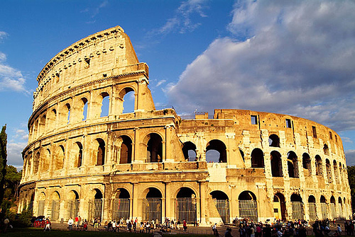
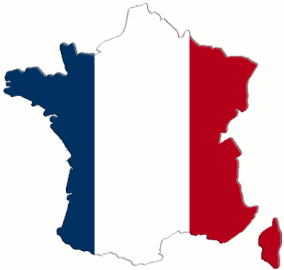

1. Introducción

La práctica de hoy va a estar relacionada con la creación de carpetas y la navegación con el explorador de archivos. Repasaremos los conceptos básicos que ya hemos visto a lo largo del curso, pero que os interesa afianzar para poder posteriormente realizar operaciones más elaboradas.
2. Descargar documentos
Para la realización de la práctica, deberemos primero descargarnos al disco duro las imágenes y documentos que os pongo a continuación.
- Descarga este archivo. ¿Sabrías decir de qué tipo es el documento?
- Descarga ahora esta imagen.
- Crea ahora una carpeta en el escritorio llamada Ejercicio práctica 30.
- Dentro de la carpeta que has creado, crea otra carpeta llamada Maravillas del mundo.
- Mueve la presentación y la imagen que te has descargado dentro de esa carpeta.
{kind=link}
3. Descargar más documentos.
Vamos a repetirlo. Realizaremos de nuevo estas operaciones con otra presentación y otras imágenes.
- Crea una carpeta dentro de la carpeta Ejercicio práctica 30 llamada noche.
- Descarga esta presentación.
- Descarga también esta imagen.
- Mueve la presentación y la imagen que te has descargado dentro de esa carpeta.
{kind=link}
3. Organizar más documentos.
De nuevo, vamos a repetir por tercera vez esta operación.
- Crea una carpeta dentro de la carpeta Ejercicio práctica 30 llamada Francia.
- Descarga esta presentación.
- Descarga también esta imagen.
- Mueve la presentación y la imagen que te has descargado dentro de esa carpeta.
{kind=link}
4. Enviar un correo.
Finalmente, si has conseguido realizar todos los pasos anteriores, ¿sabrías enviarme por correo la imagen que más te haya gustado de las tres que te he enviado?.